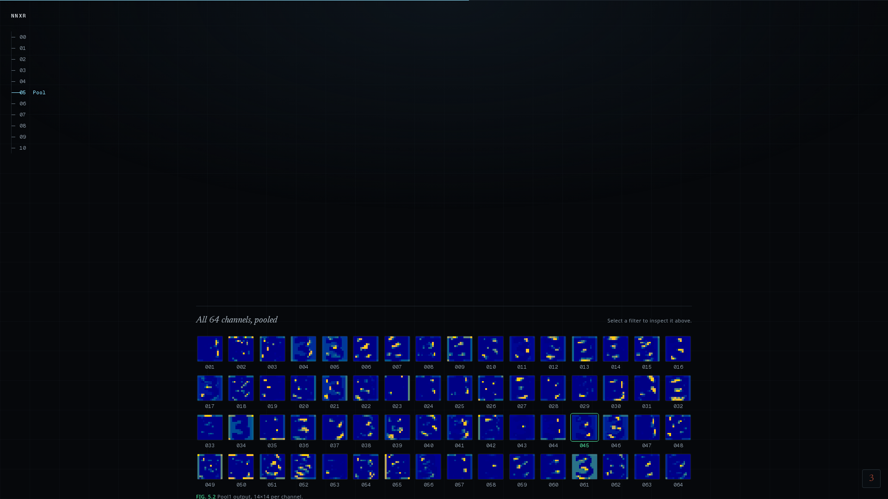
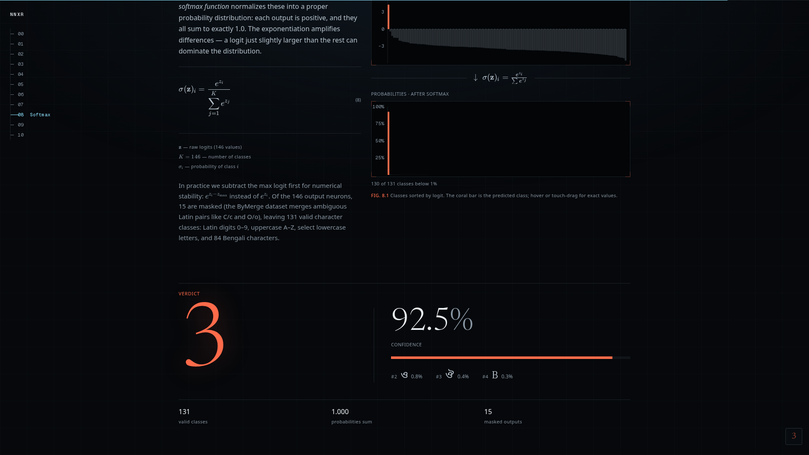
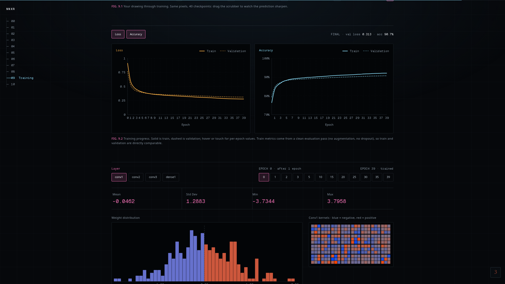

FIG. 0
· specimen
Draw a letter.
FIG. 1
· 13 layers, live
Watch a network
read
it.

FIG. 5.2
· feature maps
Every filter. Every layer.
Live.

FIG. 8
· verdict
146 characters. Latin
and
বাংলা
.

FIG. 9.2
· training
40 epochs. 980K handwritten glyphs.
●
Combined-CNN v2
Neural Network
X-Ray
1.7M parameters · 7 MB · runs in your browser
ocr.soyebjim.me